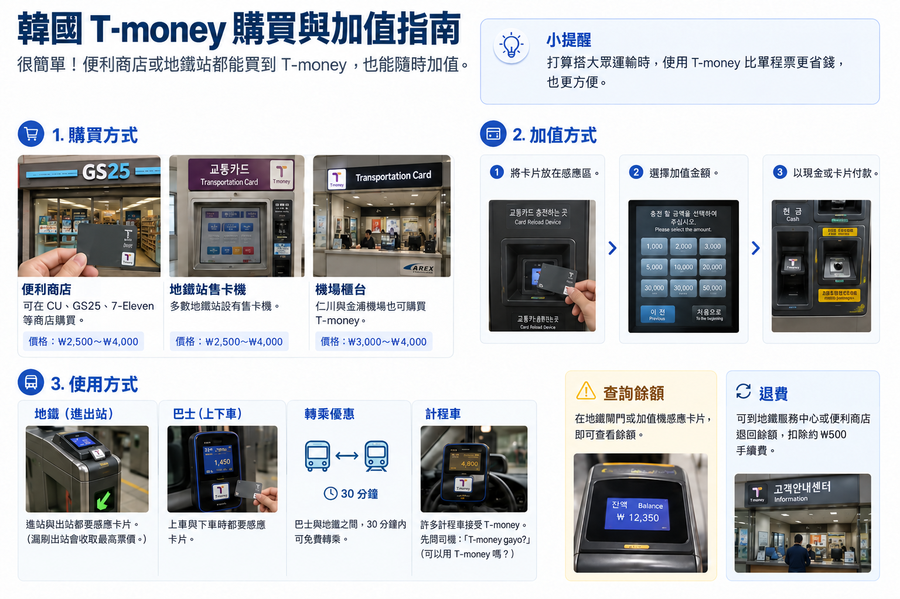
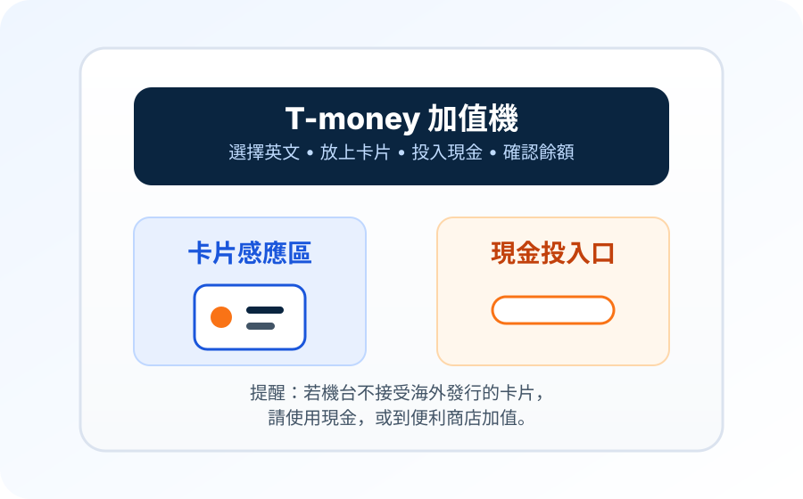

「買了卡，但地鐵閘門顯示沒有餘額。」
買實體卡與儲入交通費是兩個步驟。先拿到儲值機或合作便利商店加值韓元，再試著進站。
多數旅客不必弄懂韓國整套交通付款系統，只需要一個在機場交通結束、開始市區移動時能用的工具。實體 T-money 卡仍很適合：儲入韓元，在閘門或公車讀卡機感應，就能用同一張卡搭乘韓國大部分大眾運輸。
自 2025 年七月起，支援的 iPhone 與 Apple Watch 機型也能把 T-money 放進 Apple Wallet。看似很直覺，但儲值有條件：Apple 目前要求使用韓國發行的信用卡或簽帳金融卡，才能在 Wallet 加值。對許多海外旅客，實體卡仍最省事。

適合哪一種 T-money，重點不在技術看起來多方便，而在於你能怎麼把錢存進去。
| 實體 T-money | Apple Wallet T-money | KOREA TOUR CARD Tmoney App | |
|---|---|---|---|
| 適合對象 | 多數旅客，尤其是只有海外付款卡的人 | 已持有支援的韓國發行付款卡的 iPhone 或 Apple Watch 使用者 | 持有相容 NFC Android 手機，想用行動交通卡的旅客 |
| 取得方式 | 抵達後購買卡片 | 在 Apple Wallet 新增預付式 T-money 卡 | 透過 KOREA TOUR CARD Tmoney App 發卡與管理 T-money |
| 儲值方式 | 最穩妥的基本做法，是用現金在地鐵儲值機或合作便利商店儲值 | Apple Wallet 或 Mobile T-money；Wallet 儲值目前須使用韓國發行的信用卡或簽帳金融卡 | 官方 App 目前宣稱可用支援的國際卡儲值與退款 |
| 主要限制 | 須攜帶卡片，儲值時也可能仍需現金 | 只有海外卡，無法解決 Wallet 儲值問題 | 手機與 NFC 相容性很重要，依賴前先確認 App |
短途旅行選實體卡並不過時。對外國旅客來說，它往往是前置條件最少的版本。
VisitKorea 目前列出的T-money 購卡地點，包括全國 GS25、CU、7-ELEVEN 等便利商店，以及首爾地鐵 1 至 8 號線車站的服務中心。一般卡片目前約 ₩3,000 至 ₩5,000，但價格會隨卡面設計與販售者不同。
對多數旅客，不太需要特地在出發前購買，抵達後通常很容易買到。在便利商店或車站認明 T-money 標誌即可，不必特別找旅客專用版本。
卡片售價與卡內儲值金分開。買完卡若未儲值就直接走到地鐵閘門，光有卡片並不能搭車。
通常不必第一天就儲入大筆金額。
短期首爾旅行，Korea Inside 通常建議先儲約 ₩20,000 至 ₩30,000，之後再加。這是行程規劃建議，不是 T-money 官方規定。實際花費取決於搭乘次數、距離，以及是否也在合作店家使用餘額。
一開始少儲一些，旅程結束也輕鬆。卡裡只剩幾千韓元，比起趕去機場前突然得處理大筆退款，省事得多。
一般實體 T-money 卡，外國旅客仍以準備現金最穩妥。知道投鈔口在哪裡後，地鐵儲值機操作並不複雜；合作便利商店也能加值。
不要把這件事與首爾新型國際卡售票機混為一談。2026 年首爾在新地鐵售票機擴大海外信用卡與簽帳金融卡付款，適用 Climate Card 短期票與單程票等產品；這不代表每台一般 T-money 儲值機都已接受海外卡。
機器拒絕卡片時，不必反覆嘗試同一種付款方式。改用韓元，或把 T-money 卡拿到合作便利商店。
地鐵閘門或儲值機顯示的餘額，對多數旅客已足夠實用。餘額偏低時再加值，不必出發前就精算整趟旅程。


搭過一次就容易熟悉地鐵流程：進站感應一次，出站再感應一次。出站感應會結束該趟旅程，讓系統計算車資。
公車也要養成同樣習慣：上車感應，下車前再感應。
公車第二次感應很容易忘記，因為車門已開、大家都在往外走。但轉乘優惠需要系統知道上一段在哪裡結束、下一段在哪裡開始，因此這一步很重要。
在符合條件的公車與地鐵間正確轉乘時，T-money 可自動套用適用優惠。實際轉乘時限依系統與時段而異，不必把簡單習慣變成背時刻表：每次都正確感應即可。
地鐵與市區公車是多數旅客購買 T-money 的原因，但使用範圍不限首爾。
T-money 現行官方使用指南列出韓國許多地區的地鐵與公車適用範圍，包括主要都會交通系統，也列出許多市、郡的計程車接受情況。
計程車付款並非完全一致。T-money 本身提醒部分地區可能有限制，因此查看讀卡機或 T-money 標誌，比認定每台計程車都能扣卡內餘額更有用。
T-money 也可在標示相應 T-money 接受標誌的合作零售店家與其他據點付款，偶爾在便利商店買東西很方便。但更適合把 T-money 視為附帶部分付款用途的交通卡，而不是一般簽帳金融卡或信用卡的替代品。
部分高速巴士、城際交通、鐵路櫃檯與收費道路情境，也支援特定 T-money 產品或卡種，但規則更細。一般旅程規劃，公車與地鐵才是可靠的核心用途。
Apple 與 T-money 於 2025 年七月 21 日推出 Apple Wallet T-money。支援的 iPhone 或 Apple Watch 現在可當作預付式 T-money 交通卡，因此「iPhone 使用者不能用手機搭 T-money」的舊說法已不正確。
Apple 目前列出支援 iPhone Xs、Xr 或更新機型，須搭配 iOS 17.2 或更新版本；Apple Watch Series 6、Apple Watch SE 第 2 代或更新機型，須搭配 watchOS 10.2 或更新版本。Apple Wallet 僅支援預付式 T-money。
開啟快速模式後，不必每趟都打開 Wallet，就能在交通讀卡機感應裝置。餘額也可在 Wallet 查看。
對海外旅客最重要的是如何儲值。 Apple 現行支援說明 指出，從 Apple Wallet 購買或儲值 T-money 卡，須使用韓國發行的信用卡或簽帳金融卡。
所以有 iPhone，不代表就能省去實體卡。如果 Wallet 裡的付款卡都在韓國以外發行，決定只依賴數位 T-money 前，先確認儲值方式。
一張 T-money 卡同一時間只能用在一部 Apple 裝置。若想在 iPhone 與 Apple Watch 各有一張交通卡，Apple 說明每部裝置都需要自己的卡。
T-money 也為相容的 Android 手機提供 KOREA TOUR CARD Tmoney App。
目前官方 Google Play 頁面說明，App 可透過 NFC 使用 T-money、查看餘額與交易紀錄，並用支援的國際卡儲值或退款，包括 Mastercard、Visa、American Express、JCB 與 UnionPay。
首爾也曾介紹 KOREA TOUR CARD App，作為 Android 旅客使用海外卡儲值的方式。
「相容」是關鍵。NFC 硬體、手機設定與 App 支援可能不同，因此把手機當成在韓國唯一交通卡之前，先安裝並確認能否使用。
兒童或青少年不能直接使用成人 T-money 卡，就期待系統自動套用優惠票價。
VisitKorea 現行說明指出，未滿 18 歲旅客須登記出生日期，才能取得適用的大眾運輸優惠。購卡時，可向有辦理 T-money 業務的便利商店詢問登記方式。
家庭同行時，最好在旅程開始就處理，不要搭了好幾趟後才發現一直被收成人票價。
餘額不夠通常只是小麻煩，不是大問題。
儲值機與許多地鐵閘門都會顯示剩餘金額。首爾官方地鐵指南也說明，T-money 餘額不足時，可使用閘門附近的補票機。
長程移動前若發現餘額偏低，先在閘門外儲值，比後面有人等著時才處理輕鬆。
T-money 可以退還餘額，但這也是舊旅遊頁面容易讓人誤解的部分。
本次 2026 年八月查核時，VisitKorea 說明 T-money 餘額超過 ₩50,000，須到首爾站附近 Tmoney Town 退款；較小餘額可在便利商店辦理。有些較舊的首爾官方旅遊頁面，仍列出較低的便利商店退款上限。
因此，Korea Inside 不建議依部落格或截圖裡的舊數字，規劃旅程最後的大筆退款。若剩餘金額不少，請查閱 T-money 或 VisitKorea 現行說明。
更簡單的方法是接近旅程尾聲時，不再大額儲值。保留足夠搭剩下公車、地鐵與機場交通的金額，再自然把餘額用掉。
退還餘額與當初購買實體卡的費用，是不同的事。不要認定退卡就能拿回一開始花的每一韓元。
買實體卡與儲入交通費是兩個步驟。先拿到儲值機或合作便利商店加值韓元，再試著進站。
一般實體 T-money 卡，仍以現金最穩妥。首爾較新的國際卡售票機，不能當作每台一般 T-money 機器都接受外國卡的證明。
下車感應會影響轉乘。即使不馬上換搭另一班公車或地鐵，也請把第二次感應變成固定習慣。
計程車接受範圍很廣，但並非全部。T-money 自己的使用指南也提到可能有地區限制。車輛無法處理卡片時，請改用其他付款方式。
Apple Wallet 現在支援 T-money，但儲值規定是限制所在。Apple 目前要求韓國發行的信用卡或簽帳金融卡，才能在 Wallet 購買或儲值 T-money。
可以了解餘額退款，但退款地點與金額限制，比使用卡片本身複雜。旅程接近尾聲時，少量加值通常更省事。
付款前先找 T-money 接受標誌，或詢問店家。零售付款是實用的附加功能，但不宜因此把 T-money 當成唯一付款方式。
如果主要要解決交通問題，T-money 仍是較簡單的產品。
若還需要韓國預付式付款餘額、外幣入金與卡片管理功能，WOWPASS 就更有用。同一張實體卡內建 T-money 交通功能，但 WOWPASS 付款餘額與 T-money 餘額仍然分開。
如果已決定要用 WOWPASS，WOWPASS 指南說明兩種餘額在實際使用時如何運作。
T-money 是預付式交通卡，可用於韓國大部分大眾運輸網。地鐵與公車廣泛接受，也可用於許多計程車及合作零售店家。
VisitKorea 目前列出的購買地點，包括全國 GS25、CU、7-ELEVEN 等便利商店，以及首爾地鐵 1 至 8 號線車站的服務中心。各地庫存與卡片設計可能不同，請認明 T-money 標誌。
VisitKorea 目前列出一般實體 T-money 卡約 ₩3,000 至 ₩5,000。特殊設計或產品價格可能不同，卡片售價與另外儲值的交通餘額分開計算。
對國際旅客來說，在地鐵儲值機或合作便利商店用現金儲值，是最容易掌握的方法。不要認定每台機器都接受海外信用卡或簽帳金融卡。
不要把它當作預設可用的方法。首爾已在較新的地鐵售票機導入國際卡支援，適用產品包括 Climate Card 短期票與單程票；但這不代表一般實體 T-money 儲值全面支援海外卡。
可以。自 2025 年七月 21 日起，支援的 iPhone 與 Apple Watch 機型可在 Apple Wallet 使用預付式 T-money。不過 Apple 目前要求使用韓國發行的信用卡或簽帳金融卡，才能在 Wallet 購買或儲值 T-money。
T-money 的 KOREA TOUR CARD Tmoney App，為相容的 NFC Android 手機提供行動 T-money，目前宣稱支援多家國際發卡組織的卡片儲值與退款。依賴它之前，應先確認裝置相容性。
要。搭地鐵進站、出站都要感應；搭公車上車時感應，下車前再感應一次。公車下車感應會影響轉乘優惠。
許多計程車與合作零售店家接受 T-money，但並非全部。請確認 T-money 標誌或付款設備，尤其是在大城市以外搭計程車時。
沒有一個金額適合所有行程。短期首爾旅行，Korea Inside 通常建議先儲約 ₩20,000 至 ₩30,000，不夠再加，不必一開始就放入大筆餘額。
可以，但須依現行退款規定與門市額度限制。2026 年八月的 VisitKorea 說明指出，超過 ₩50,000 的餘額由首爾站附近的 Tmoney Town 處理，較小餘額可在便利商店退還。依賴特定退款地點前，請查核最新說明。
如果主要需要搭公車與地鐵，T-money 通常較簡單。若還想要預付式購物付款、支援的外幣入金，以及 App 卡片管理，WOWPASS 更有用。請看 Korea Inside 的 T-money 與 WOWPASS 比較指南，了解完整比較。
現行地鐵、公車、計程車與其他交通接受資訊。
現行旅客購買地點、一般卡價、儲值與退款說明。
推出日期、支援的 Apple 裝置、快速模式與 T-money 儲值要求。
目前 Apple Wallet T-money 購買與儲值須使用韓國發行付款卡的要求。
2026 年首爾新地鐵售票機接受國際卡的範圍。
T-money 官方 Android 旅客 App、NFC 使用，以及目前列出的國際卡儲值支援。
最近查核：2026 年八月
T-money 付款方式、退款據點、裝置支援與交通接受範圍可能變動。若特定付款卡、手機或退款地點會影響行程，請使用 T-money、Apple 或官方旅遊現行說明，不要依賴舊截圖。